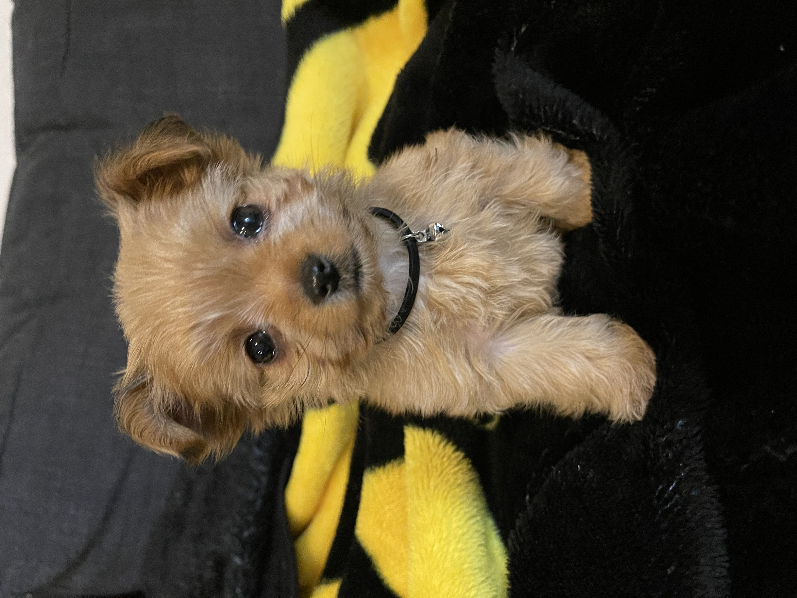
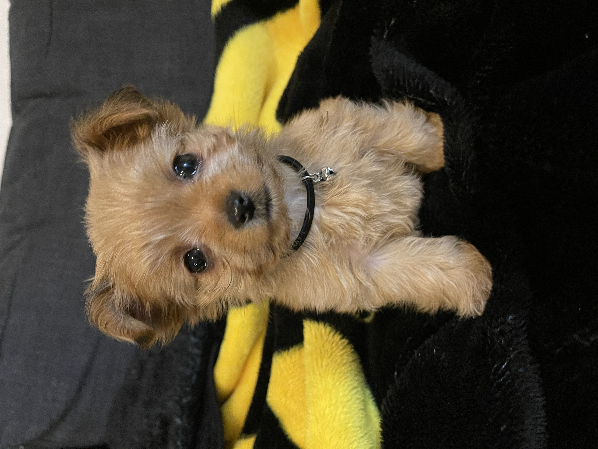

My career has spanned 17 years: 14 of those in government and public service, and three years in tech sales and business development. After serving as a chief of staff or senior advisor for several elected officials, I transitioned from the world of politics
into the private sector. In 2018, I joined a tech startup, Qualia, as the first Vendor Partnerships Manager, where I led the way in growing revenues by 26x, order volume by 29x, and vendor headcount by 8x.
As a proven team builder and coach, I am driven to help others succeed, be they teammates, customers, or partners. I thrive in fast-paced, ambiguous environments, and pride myself on figuring things out quickly and autonomosly.
 

A 17 year resident of Austin, TX, I live in South Austin with my wife and two dogs.
In my spare time, I explore several interests. I am an amateur BBQ pitmaster, golf enthusiast, DIY hobbyist, aspiring web developer, and student of musical instruments. I am also working on a series of family documentaries in an effort to preserve the history and stories for the future generations.